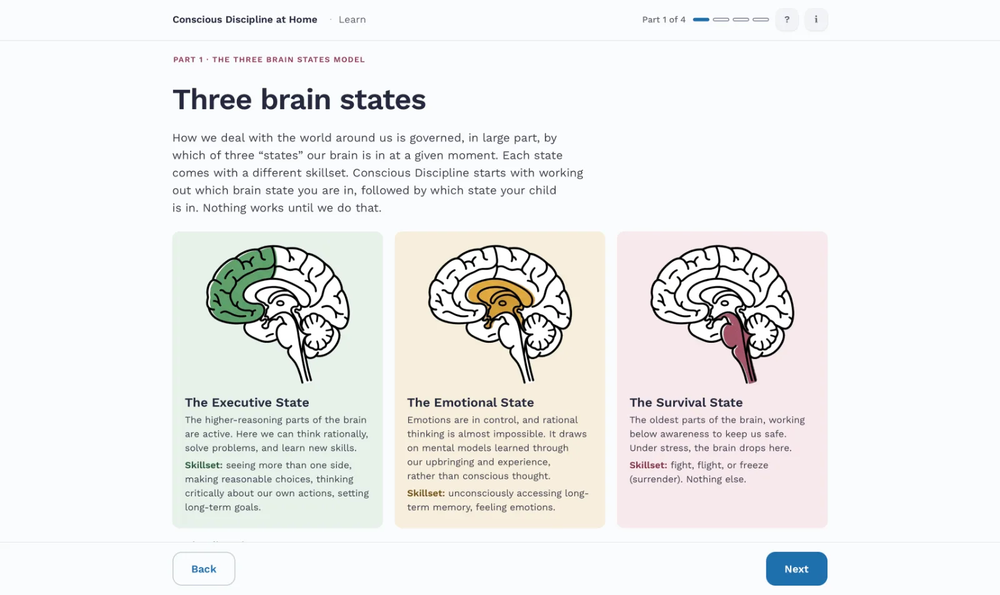
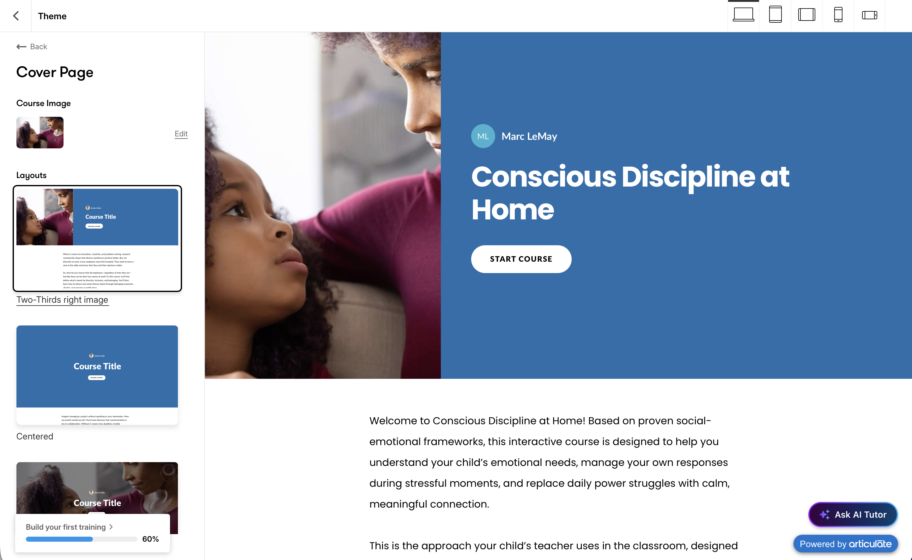
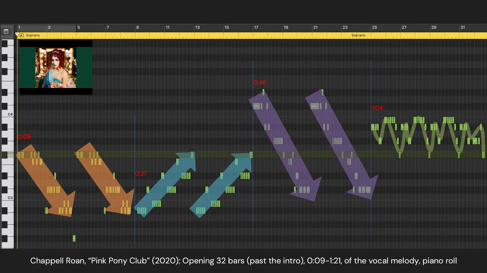

Instructional Design and Learning Experience Specialist
Hi! I’m Marc LeMay, a designer with over two decades of experience crafting learning for adults and developing large-scale projects. I specialize in teaching the reluctant. Learners often come to me skeptical, but leave with new perspectives on the material, motivated by my passion for making complex subjects digestible and engaging.

Write-up → 02 Rise 360 sample module Parts of the Conscious Discipline module rebuilt in an authoring tool, along with an account of where the tool fell short.
Write-up → 03 Sequencing a graduate course Sample slides from a graduate-level music theory course I taught, showing how I sequence a lecture: open with exploratory questions, learn the methods, then use them to answer those questions.
Slides →Why Instructional Design? Why now?
I spent more than two decades as a designer and educator in higher ed. I loved teaching: the interactions with students, the thrill of seeing them grow, and the fun and challenge of designing effective learning.
But I’ve encountered two main obstacles to continuing my career in academia:
- I resigned a full-time faculty position at Georgia State University to support my wife’s academic career at FSU and be the primary caretaker at home. I’d make the same choice again, but both of us building academic careers in one college town hasn’t been sustainable.
- The pace and evaluative frameworks of higher ed left me frustrated. My attempts to innovate curricula to make them more learner-centric, technology-forward, and culturally relevant have met a lot of resistance from an entrenched system. And with a culture short on accountability, change is slow and problems remain unfixed.
What I Want Now
To put my experience and skills to work in a faster-paced environment that is strong on critique and accountability, all with the goal of shipping the best learning experiences possible in the time they’re needed. That is why I am pivoting to full-time instructional design.